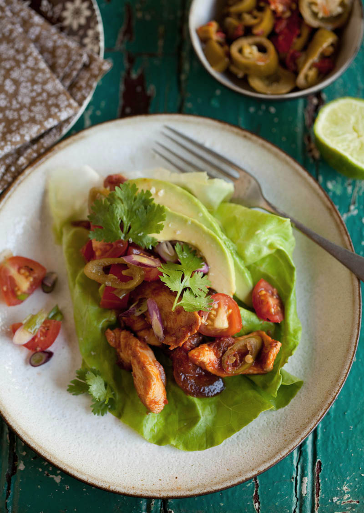
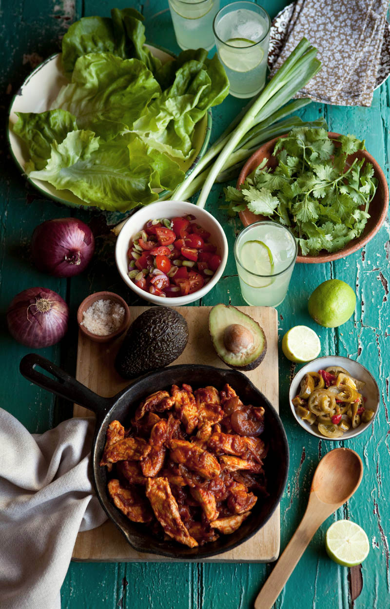
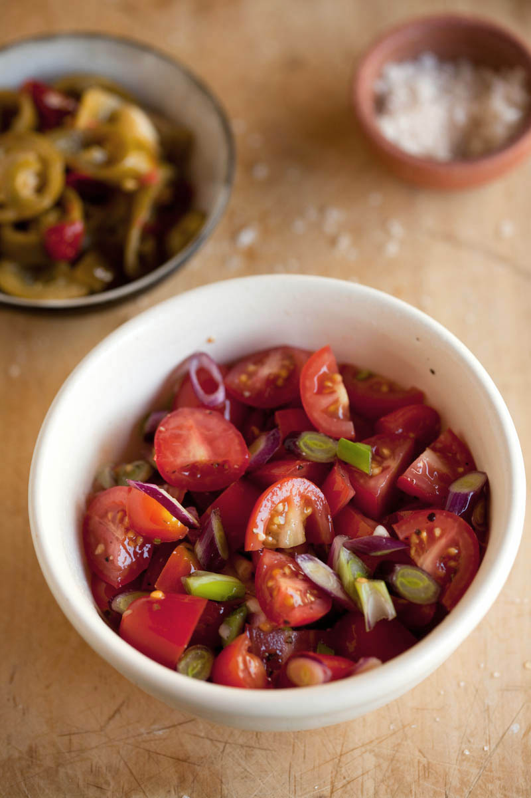

lettuce ‘tacos’ with chipotle chicken

INGREDIENTS
- 400g of skinless chicken breast cut into fairly thin strips
- splash of olive oil to fry these in
- 1 x red onion finely sliced
- 1 x 400g tin of tomatoes (whole or chopped)
- 1 T of finely chopped chipotle in adobo sauce (or substitute with finely chopped pickled jalapeno chillis and a pinch of dried chilli flakes)
- 1/2 t cumin
- pinch of brown sugar and salt and pepper to season
- lettuce leaves to make your tacos (I like to use butter lettuce or baby gem lettuce)
- fresh coriander leaves
- sliced pickled jalapeno chillies
- slices of avocado or make a guacamole
- fresh tomatoes and slices of spring onion to make a rustic salsa – as much as you need. I used about 2 cups of quartered rosa / cherry tomatoes and sliced red spring onions / scallions. I tossed these together with lots of salt and pepper.
- lime wedges to spritz


DIRECTIONS
- Heat the olive oil in a non-stick frying pan and quickly fry your chicken pieces until they turn golden. Set aside.
- In the same pan, add another small splash of olive oil and fry your onion until it softens.
- Add your tomatoes, cumin, sugar and chipotle and simmer for around 15 – 25 minutes until the tomato sauce starts to thicken around the edges of the pan.
- Add the chicken back into the sauce and allow to cook for about 5 minutes.
- Assemble all the elements to make your tacos in separate bowls and serve so that every one can make up their own.
- I like to give the chicken a good spritz of lime juice. This freshens things up and amplifies the flavours.